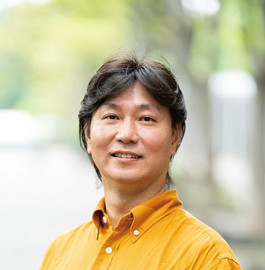
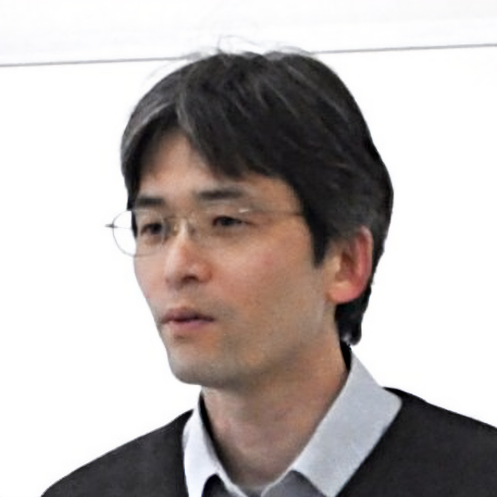

教員紹介
| データサイエンス分野 | 大久保 寬 片山 薫 高間 康史 田川 憲男 相馬 隆郎 横山 昌平 草野 翼 柴田 祐樹 |
| 人間情報・知能情報分野 | 岡本 正吾 西内 信之 松井 岳巳 下川原 英理 福井 隆雄 佐藤 正平 福地 庸介 |
| ネットワークサイエンス分野 | 會田 雅樹 朝香 卓也 松田 崇弘 酒井 和哉 白木 詩乃 中嶋 一貴 藤田 八郎 |
| コンテンツ情報処理分野 | 小野 順貴 西川 清史 塩田 さやか 杉村 大輔 中嶋 大志 |
| 情報システムアーキテクチャ分野 | 鈴木 敬久 福本 聡 三浦 幸也 渋谷 正弘 肖 霄 伊澤 侑祐 |
| 特別先導教授 | 石川 博 貴家 仁志 |
| 大学院兼担教員 | 永井 正洋 藤吉 正明 伏木田 稚子 |
教授
會田 雅樹

情報ネットワーク/ネットワーク科学/自律分散制御/ソーシャルメディアネットワーク/社会ネットワーク分析
朝香 卓也
サイバーフィジカルシステム/情報ネットワークセンサネットワーク/IoT/データセントリックサービス
大久保 寬
波動情報工学/音響工学/信号処理/数値解析/波動センシング/HPC/可視化技術/防災科学
岡本 正吾

人間情報学/バーチャルリアリティ/支援システム/感性科学・工学
小野 順貴

音響信号処理/マイクロホンアレイ/音源分離/最適化アルゴリズム/機械学習
片山 薫

3次元モデル/CAD/アセンブリ/検索/データ駆動工学
鈴木 敬久
大規模計算の高速化/数理モデルとAIによる社会的課題解決/大規模システム設計・統合/先進的ネットワークストレージ
高間 康史

Webインテリジェンス/情報可視化/情報推薦システム/インタラクティブシステム/データマイニング
田川 憲男
コンピュータビジョン/画像・映像解析/超音波イメージング/統計的機械学習
西内 信之

ヒューマンインタフェース/ユーザビリティ/ユーザエクスペリエンス/バイオメトリクス
西川 清史
信号処理/画像・動画処理/深層ニューラルネットワーク
福本 聡
ディペンダブルコンピューティング/セキュアコンピューティング/分散システム/人工知能応用
松井 岳巳
医用システム用・診断アルゴリズムの提案/プロトタイプのデザインとアルゴリズム実装、これを用いた臨床研究
松田 崇弘

情報通信ネットワーク/無線ネットワーク/通信品質/ネットワーク診断/ネットワーク計測
三浦 幸也
VLSI(集積回路)/設計&テスト/高信頼化システム/ディペンダブルコンピューティング
准教授
酒井 和哉
ネットワークセキュリティ/情報セキュリティ/人工知能セキュリティ/分散システム/強化学習
塩田 さやか

音声情報処理/機械学習/音声バイオメトリクス
渋谷 正弘
デジタルツイン(バーチャルツイン)/DX/カイゼン
下川原 英理

知能ロボット/マルチモーダルインタラクション/IoT/対話システム/人工知能
肖 霄

ソフトウェア信頼性/システムパフォーマンス/ブロックチェーン/ウェブサーバ/確率統計/ウェーブレット/機械学習
杉村 大輔

画像認識/画像処理/計算撮像/機械学習
相馬 隆郎
二足歩行ロボット/対話システム応用/画像認識/機械学習システム
福井 隆雄

認知科学/視覚-運動変換過程/運動生成と行為知覚/到達把持動作/三次元動作解析
横山 昌平

SNS映えの科学/ジオソーシャル測量技術/ビッグデータ可視化/地理情報処理アルゴリズム
助教
伊澤 侑祐
プログラミング言語/プログラミング環境/ソフトウェア
草野 翼
時間周波数解析/データ解析/音響信号処理
佐藤 正平
医工学/モバイルヘルス/ウェアラブル
白木 詩乃

センサの位置推定/歩行者の屋内位置推定/環境情報推定
柴田 祐樹

データマイニング/情報可視化/人工知能/機械学習/最適化
中嶋 大志

音響信号処理/アレイ信号処理/ブラインド音源分離
中嶋 一貴

計算社会科学/ネットワーク科学/ソーシャルデータ分析
福地 庸介

人間・AIインタラクション/説明可能AI/社会的AI
藤田 八郎

通信システム/符号/暗号